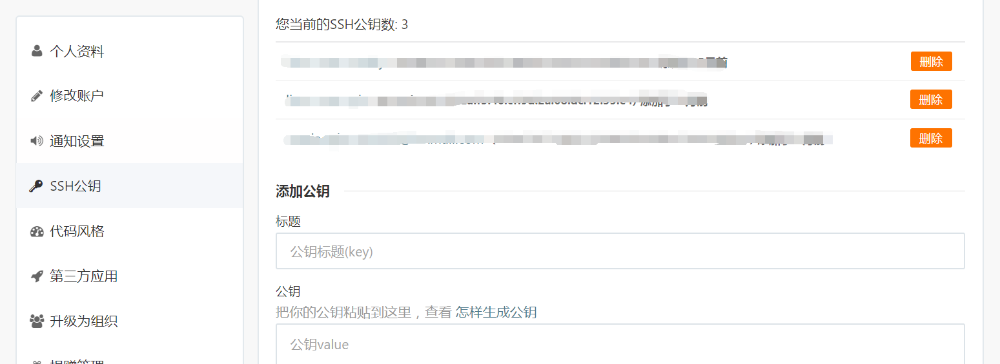

GitHub Actions 是 GitHub 的持续集成服务，于2018年10月推出。
通过 GitHub Actions 持续集成 Hexo ，可以 clone 后，只需写 Markdown ，push md 。
GitHub Actions 是什么？
大家知道，持续集成由很多操作组成，比如抓取代码、运行测试、登录远程服务器，发布到第三方服务等等。GitHub 把这些操作就称为 actions。
很多操作在不同项目里面是类似的，完全可以共享。GitHub 注意到了这一点，想出了一个很妙的点子，允许开发者把每个操作写成独立的脚本文件，存放到代码仓库，使得其他开发者可以引用。
如果你需要某个 action，不必自己写复杂的脚本，直接引用他人写好的 action 即可，整个持续集成过程，就变成了一个 actions 的组合。这就是 GitHub Actions 最特别的地方。
工作流程是您可以在仓库中创建的自定义自动化流程，用于在 GitHub 上构建、测试、封装、发行或部署任何代码项目。
通过 GitHub 操作 可直接在仓库中构建端到端持续集成 (CI) 和持续部署 (CD) 功能。 GitHub 操作 支持 GitHub 的内置持续集成服务。
GitHub 做了一个官方市场，可以搜索到他人提交的 actions。另外，还有一个 awesome actions 的仓库，也可以找到不少 action。

上面说了，每个 action 就是一个独立脚本，因此可以做成代码仓库，使用userName/repoName的语法引用 action。比如，actions/setup-node就表示github.com/actions/setup-node这个仓库，它代表一个 action，作用是安装 Node.js。事实上，GitHub 官方的 actions 都放在 github.com/actions 里面。
既然 actions 是代码仓库，当然就有版本的概念，用户可以引用某个具体版本的 action。下面都是合法的 action 引用，用的就是 Git 的指针概念，详见官方文档。
2
3
actions/setup-node@v1.0 # 指向一个标签
actions/setup-node@master # 指向一个分支
免费使用额度
公共仓库免费使用 GitHub 操作。 对于私有仓库，每个 GitHub 帐户可获得一定数量的免费记录和存储，具体取决于帐户所使用的产品。
分钟数每月都会重置，而存储使用量不重置。
| 产品 | 存储器 | 分钟数（每月） |
|---|---|---|
| GitHub Free | 500 MB | 2,000 |
使用限制
使用限制可能会有变动，需查看官方。
作业执行时间 - 工作流程中的每个作业最多可以运行 6 个小时。
工作流程运行时间 - 每个工作流程的运行时限为 72 小时。
作业排队时间 - 自托管运行器的每个作业最多可排队 24 小时。
API 请求 - 在一个仓库的所有操作中，一个小时内最多可执行 1000 个 API 请求。
并发作业
GitHub 计划 同时运行的作业总数 MacOS 作业同时运行的最大数量 免费 20 5
作业矩阵 - 作业矩阵在每次工作流程运行时最多可生成 256 个作业。
基本概念
GitHub Actions 有一些自己的术语。
（1）workflow （工作流程）：持续集成一次运行的过程，就是一个 workflow。
（2）job （任务/作业）：一个 workflow 由一个或多个 jobs 构成，含义是一次持续集成的运行，可以完成多个任务。
（3）step（步骤）：每个 job 由多个 step 构成，一步步完成。
（4）action （动作/操作）：每个 step 可以依次执行一个或多个命令（action）。
workflow 文件
GitHub Actions 的配置文件叫做 workflow 文件，必须存放在代码仓库的.github/workflows目录。
workflow 文件采用 YAML 格式，文件名可以任意取，但是后缀名统一为.yml，比如foo.yml。一个库可以有多个 workflow 文件。GitHub 只要发现.github/workflows目录里面有.yml文件，就会自动运行该文件。
workflow 文件的配置字段非常多，详见官方文档。下面是一些基本字段。
name
工作流程的名称。 GitHub 在仓库的操作页面上显示工作流程的名称。 如果省略 name，GitHub 将其设置为相对于仓库根目录的工作流程文件路径。
on
必要 触发工作流程的 GitHub 事件的名称。 您可以提供单一事件 string、事件的 array、事件 types 的 array 或事件配置 map，以安排工作流程的运行，或将工作流程的执行限于特定文件、标记或分支更改。 有关可用事件的列表，请参阅“触发工作流程的事件”。
使用单一事件的示例
1 | # Trigger on push |
使用事件列表的示例
1 | # Trigger the workflow on push or pull request |
除了代码库事件，GitHub Actions 也支持外部事件触发，或者定时运行。
on.<event_name>.types
选择将触发工作流程运行的活动类型。 大多数 GitHub 事件由多种活动触发。 例如，发布资源的事件在发行版 published、unpublished、created、edited、deleted 或 prereleased 时触发。 通过 types 关键词可缩小触发工作流程运行的活动类型的范围。 如果只有一种活动类型可触发 web 挂钩事件，就没有必要使用 types 关键词。
您可以使用事件 types 的数组。 有关每个事件及其活动类型的更多信息，请参阅“触发工作流程的事件”。
1 | # Trigger the workflow on pull request activity |
on.<push|pull_request>.<branches|tags>
使用 push 和 pull_request 事件时，您可以将工作流配置为在特定分支或标记上运行。 对于 pull_request 事件，只评估基础上的分支和标签。 如果只定义 tags 或只定义 branches，则影响未定义 Git ref 的事件不会触发工作流程运行。
branches、branches-ignore、tags 和 tags-ignore 关键词接受使用 * 和 ** 通配符匹配多个分支或标记名称的 glob 模式。 更多信息请参阅“过滤器模式备忘清单”。
包括分支和标记的示例
在 branches 和 tags 中定义的模式根据 Git ref 的名称进行评估。 例如，在 branches 中定义的模式 mona/octocat 将匹配 refs/heads/mona/octocat Git ref。 模式 releases/** 将匹配 refs/heads/releases/10 Git ref。
1 | on: |
on.<push|pull_request>.paths
使用 push 和 pull_request 事件时，您可以将工作流程配置为在至少一个文件不匹配 paths-ignore 或至少一个修改的文件匹配配置的 paths 时运行。 路径过滤器不评估是否推送到标签。
paths-ignore 和 paths 关键词接受使用 * 和 ** 通配符匹配多个路径名称的 glob 模式。 更多信息请参阅“过滤器模式备忘清单”。
jobs.<job_id>
每项作业必须关联一个 ID。 键值 job_id 是一个字符串，其值是作业配置数据的映像。 必须将 替换为 `jobs` 对象唯一的字符串。 必须以字母或 _ 开头，并且只能包含字母数字字符、- 或 _。
1 | jobs: |
jobs.<job_id>.needs
识别在此作业运行之前必须成功完成的任何作业。 它可以是一个字符串，也可以是字符串数组。 如果某个作业失败，则所有需要它的作业都会被跳过，除非这些作业使用让该作业继续的条件语句。
1 | jobs: |
在此示例中，job1 必须在 job2 开始之前成功完成，而 job3 要等待 job1 和 job2 完成。
此示例中的作业按顺序运行：
job1job2job3
jobs..runs-on
必需运行作业的机器类型。 机器可以是 GitHub 托管的运行器或自托管的运行器。
GitHub 托管的运行器
如果使用 GitHub 托管的运行器，每个作业将在 runs-on 指定的虚拟环境的新实例中运行。
可用的 GitHub 托管的运行器类型包括：
| 虚拟环境 | YAML 工作流程标签 |
|---|---|
| Windows Server 2019 | windows-latest 或 windows-2019 |
| Ubuntu 20.04 | ubuntu-20.04 |
| Ubuntu 18.04 | ubuntu-latest 或 ubuntu-18.04 |
| Ubuntu 16.04 | ubuntu-16.04 |
| macOS Catalina 10.15 | macos-latest 或 macos-10.15 |
注：Ubuntu 20.04 虚拟环境目前仅作为预览提供。 ubuntu-latest YAML 工作流程标签仍使用 Ubuntu 18.04 虚拟环境。
示例
1 | runs-on: ubuntu-latest |
更多信息请参阅“GitHub 托管的运行器的虚拟环境”。
jobs.<job_id>.steps
作业包含一系列任务，称为 steps。 步骤可以运行命令、运行设置任务，或者运行您的仓库、公共仓库中的操作或 Docker 注册表中发布的操作。 并非所有步骤都会运行操作，但所有操作都会作为步骤运行。 每个步骤在运行器环境中以其自己的进程运行，且可以访问工作区和文件系统。 因为步骤以自己的进程运行，所以步骤之间不会保留环境变量的更改。 GitHub 提供内置的步骤来设置和完成作业。
在工作流程的使用限制之内可运行无限数量的步骤。 更多信息请参阅“使用限制”。
示例
1 | name: Greeting from Mona |
示例：使用 GitHub Actions 发布 Hexo
准备通过SSH推送到Gitee的公私钥
因为Gitee 推送方式不同，现在只开放了 OpenAPI 和 OAuth。
gitee也有令牌，但是gitee的令牌暂时不支持像github的token那样有推送代码的权限，gitee的推送有两种方式：
- 通过https协议使用用户名、密码推送
https://用户名:密码@gitee.com/用户/仓库名.git - 通过ssh协议，使用私钥文件免密推送
git @ gitee.com/用户/仓库名.git
本文使用 SSH ，直接通过添加用户私钥文件免密推送。
SSH 密钥对总是成双出现的，一把公钥，一把私钥。公钥可以自由的放在您所需要连接的 SSH 服务器上，而私钥必须稳妥的保管好。
所谓”公钥登录”，原理很简单，就是用户将自己的公钥储存在远程主机上。登录的时候，远程主机会向用户发送一段随机字符串，用户用自己的私钥加密后，再发回来。远程主机用事先储存的公钥进行解密，如果成功，就证明用户是可信的，直接允许登录 shell，不再要求密码。这样子，我们即可保证了整个登录过程的安全，也不会受到中间人攻击。
生成密钥对
我们可以使用 ssh-keygen 命令生成密钥对
1 | ssh-keygen -o -a 100 -t ed25519 -f ~/.ssh/id_ed25519_gitee -C "yanzhe919@gmail.com" |
randomart image 是 OpenSSH 5.1 引入的一种简单的识别指纹 (fingerprint) 的图像。
ed25519是目前最安全、加解密速度最快的key类型。Ed25519公钥更为紧凑，仅68个字符。生成密钥和签名的过程都非常快，使用Ed25519进行批量签名验证也很快。它是为防碰撞而设计的，防哈希冲突。
Ed25519 的安全性在 RSA 2048 与 RSA 4096 之间，且性能在数十倍以上。
如果可以的话，优先选择ed25519，否则选择rsa 3072/4096。如果使用RSA密钥，则美国国家科学技术研究院在出版物800-57第3部分（PDF）中建议密钥大小至少为2048位。
分别配置密钥对
公钥放入 Gitee
找到 ~/.ssh/ 下 生成的 id_ed25519_gitee.pub ，在 Gitee Web 界面中，添加到 Gitee SSH 公钥 。

如果需要在本地进行验证，可在 ~/.ssh/ 下修改 config 文件。
1 | Host gitee.com |
添加后，在终端（Terminal）中输入
1 | ssh -T git@gitee.com |
若返回
1 | Welcome to Gitee.com, yourname! |
则证明添加成功。
私钥放入 GitHub
将 id_ed25519_gitee 私钥，拷贝配置在 GitHub Blog 仓库的 Settings -> Secrets -> Add a new secret，添加 ID_ED25519_GITEE ，Value 部分直接拷贝私钥内容。
具体步骤可参考 为仓库创建加密密码 。
同时，觉得直接放入私钥不安全的，可以再使用
gpg在本地对您的凭据加密。
准备 workflows yaml 文件
在这个仓库的.github/workflows目录，生成一个 workflow 文件，名字可以随便取，这个示例是deployment.yml。
1 | # 文件路径 .github/workflows/deployment.yml |
GitHub 发现了 workflow 文件以后，就会自动运行。你可以在网站上实时查看运行日志，日志默认保存30天。
等到 workflow 运行结束，访问 GitHub Page，会看到构建成果已经发上网了。
以后，每次修改后推送源码，GitHub Actions 都会自动运行，将构建产物发布到网页。
1 | git status |